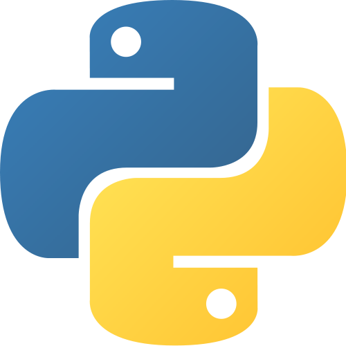

Building Python from source on Debian or Ubuntu
Python is available pre-built for more or less every platform and if you are using Linux or Mac then you have it already. If you don’t know why would you want to build Python from source, then this post is probably not for you.
I wanted to test things on a newer version of Python than is currently available in Debian stable. There are also things I want to improve in the standard library, but sadly I do not have time for that at the present moment - but a man is allowed to dream.
Building Python is explained in the Python Developer’s Guide. This post is a commentary on that, and I am assuming you are using a Debian or Ubuntu based operating system on your computer.
To start with you need the Mercurial source control management tool, commonly known as hg. If you don’t have it, you can get it with the following command:
sudo apt-get install mercurial
Now you need to get the source code of Python, as the developer guide says:
hg clone http://hg.python.org/cpython
You will get output like this:
destination directory: cpython
requesting all changes
adding changesets
Now you have to wait for a little bit; obviously there has been quite a lot of changes since Python began in 1989, so this may take ten minutes (depending on the speed of your computer). There is no progress bar or anything, so you have to just have faith that something is happening. Eventually, I ended up with 301 M in my new cpython directory.
While that is working, open a new terminal tab and start installing the dependencies. As the guide points out, the following gives the minimum required:
sudo apt-get build-dep python3
Several modules in the standard library depend on optional dependencies, to get them all you can do this:
sudo apt-get install libreadline6-dev libsqlite3-dev liblzma-dev libbz2-dev tk8.5-dev blt-dev libgdbm-dev libssl-dev libncurses5-dev
Feel free to leave out the ones you know you are not interested in e.g. a server will not need support for GUIs, so leave out tk8.5-dev and blt-dev in that case.
A slightly obvious point, but worth pointing out, is that some of these packages have version numbers in. If your distribution has newer packages than mine, especially if you are reading this post years after I wrote it, then this command might give errors. In that case, first try increasing the numbers.
Now we are ready to go back to the developer guide:
cd cpython
./configure --with-pydebug
make -s -j2
For completeness, I will just point out that -s is for silent and -j2 allows make to use two parallel ‘jobs’ which then invoke the compiler i.e. gcc (for portability reasons make does not use threads or processes but has its own internal jobserver), you can increase the number 2 but compiling Python is pretty quick (especially compared to the earlier steps), around half of cpython is actually written in Python anyway.